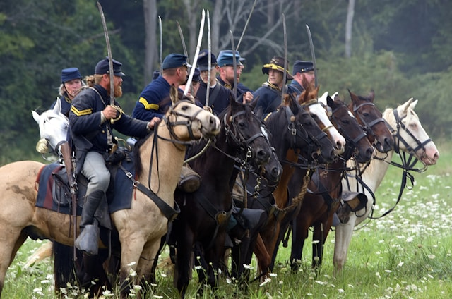
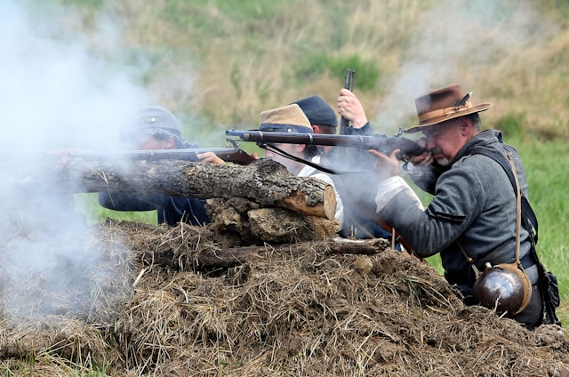

Interested In Reenacting
Are you interested in American Civil War reenactment? Do you want to participate in reenactments? We will connect you with your local reenactment group. We will also show you places where you can get some basic gear to try this exciting hobby.
Get StartedQuestions
Do you want to see an American Civil War reenactment unit near you? Do you have any questions about this hobby? Do you want to get your unit registered in our unit database? Contact us and we will get to you as soon as possible with a solution.
Contact UsAbout Us
The Civil War Reenactment Hub is your online destination for all things related to the American Civil War. We are passionate about bringing history to life through reenactments, and we strive to provide a central resource for enthusiasts of all levels. Whether you're a seasoned reenactor, a curious history buff, or simply interested in learning more about this pivotal period in American history, our hub offers a wealth of information. Explore our comprehensive event calendar, connect with other reenactors, discover local units and organizations, find resources for authentic gear and supplies, and delve into the rich history and stories of the Civil War era. We believe that reenactments offer a unique and engaging way to learn about the past and connect with history on a deeper level. Our goal is to foster a vibrant community of reenactors and history enthusiasts, while promoting historical accuracy and respectful portrayal of this important period in American history.
 